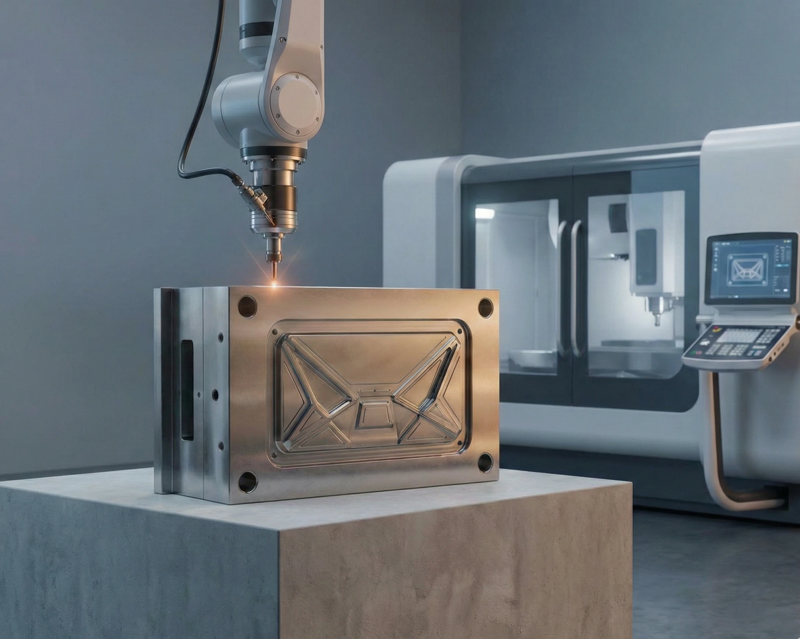
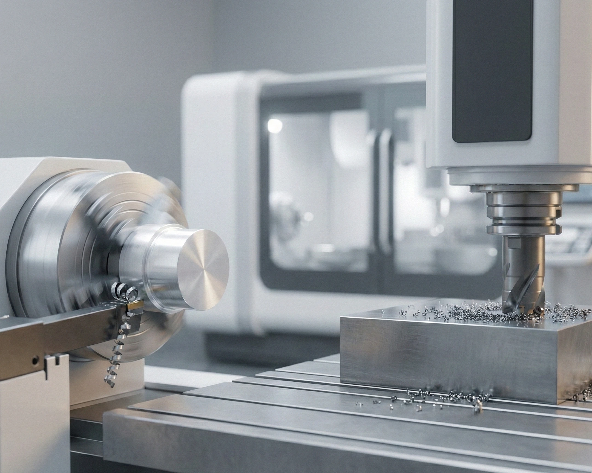
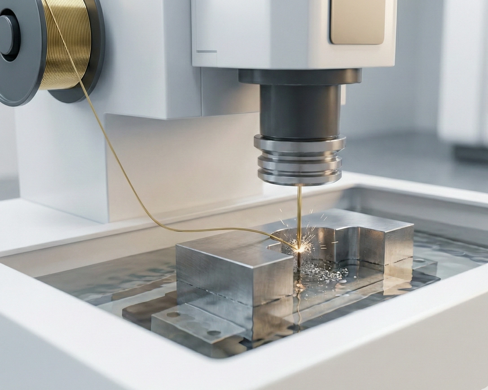
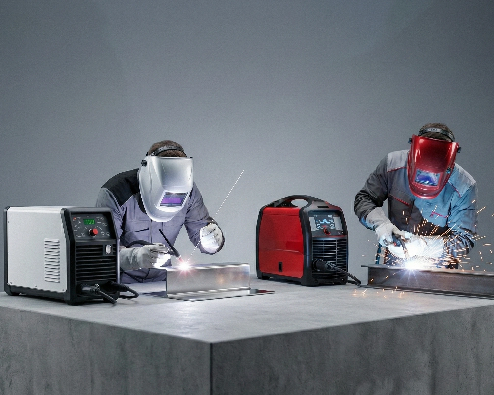
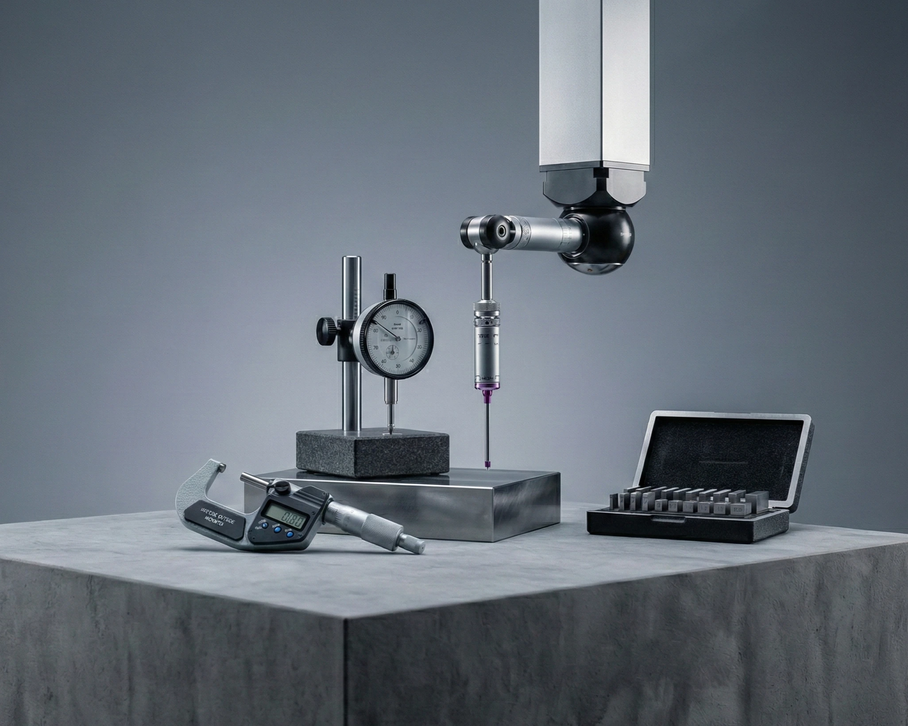
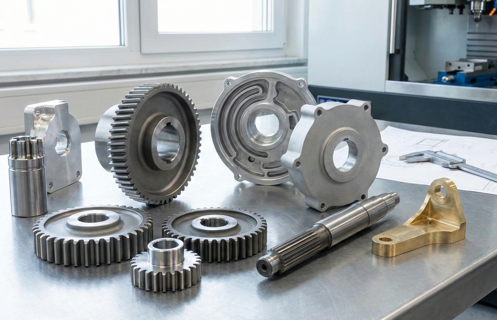

Soluciones integrales para tus necesidades industriales.
Servicios profesionales de fabricación y mantenimiento industrial, diseñados para optimizar tus procesos productivos con calidad y eficiencia.
Nuestros Servicios Especializados
Contamos con tecnología de punta y personal altamente capacitado para ofrecer soluciones industriales de la más alta calidad.

Fabricación y Reparación de Moldes
Diseño, fabricación y reparación de moldes industriales con precisión milimétrica para todo tipo de aplicaciones.

Torno y Fresado CNC
Mecanizado de alta precisión con control numérico computarizado para piezas complejas y series de producción.

Corte por Electroerosión
Tecnología EDM para cortes de precisión en materiales duros y geometrías complejas imposibles con métodos convencionales.

Soldadura TIG y MIG
Soldadura profesional con procesos TIG y MIG para uniones de alta resistencia en diversos materiales metálicos.

Medición de Precisión
Control de calidad dimensional con equipos de medición de alta precisión para garantizar especificaciones exactas.

Piezas Mecánicas Personalizadas
Fabricación a medida de componentes mecánicos según especificaciones del cliente para cualquier aplicación industrial.
Proyectos Realizados
Ejemplos de nuestro trabajo especializado en fabricación de herramientas y componentes industriales.
Mordazas para Extracción de Módulos
Fabricación de mordazas especializadas diseñadas para la extracción segura y eficiente de módulos industriales, garantizando un agarre firme y preciso.
Mordazas para Balero con Corte Erosionadora de Hilo
Diseño y fabricación de mordazas para baleros utilizando tecnología de corte por electroerosión de hilo para lograr tolerancias extremadamente ajustadas.
Rectificado de Moldes para Mangos de Desarmador
Servicio de rectificado de precisión para moldes utilizados en la producción de mangos de desarmador, asegurando acabados superficiales óptimos.
Mordazas para Chuck
Fabricación de mordazas especiales para chuck, diseñadas para sujeción segura de piezas durante operaciones de torneado y fresado.
Pallets Industriales
Diseño y fabricación de pallets de precisión para sistemas automatizados, optimizando la logística y el manejo de materiales en líneas de producción.
¿Tienes un proyecto en mente?
Contáctanos y cuéntanos sobre tus necesidades. Nuestro equipo de expertos está listo para brindarte una solución a medida.